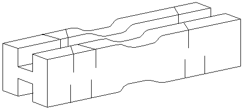

|
A set of miter boxes made very quick work of the vertical and diagonal trusses for the ribs. They were all hand cut using a thin bladed saw that cuts on a pull stroke.
The slot was cut on a table saw to allow the 1/4" sq stock to sit just below the top, with very little side to side slop. The relieved section in the center allowed a small clamp to hold the stock while cutting the ends. |
Copyright 1998, Thayer Syme. All rights reserved